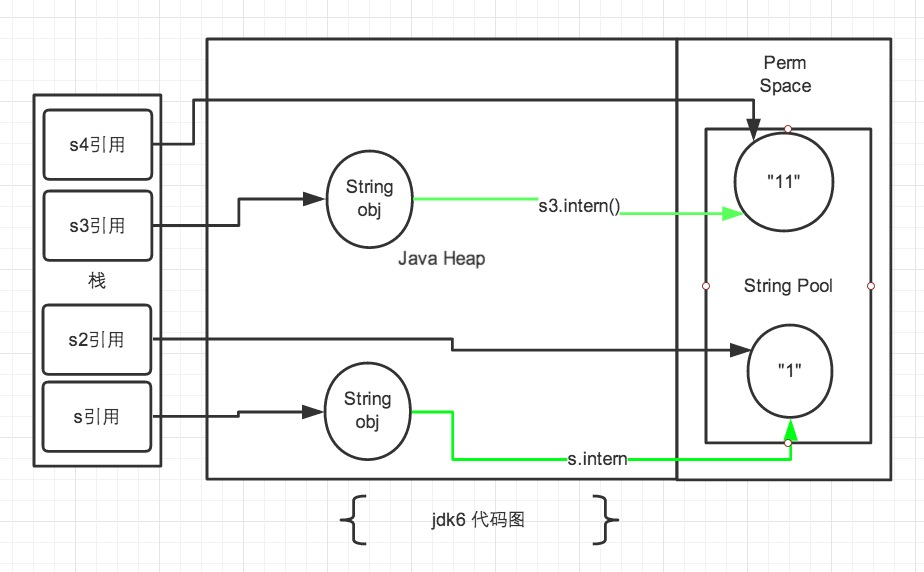
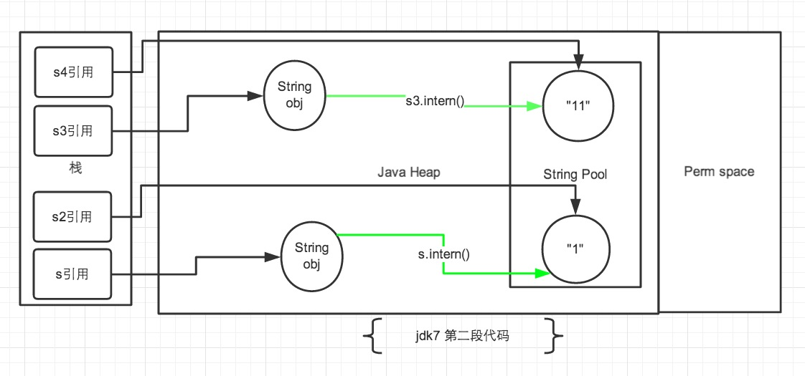

解决jmm中最重要也是最难的两个问题：1. 对象实例化时内存的布局和访问定位；2. StringTable的机制
对象实例化
面试题
- 对象在JVM中是怎么存储的？
- 对象头信息里面有哪些东西？
- Java对象头有什么？
从对象创建的方式 和 步骤开始说

对象创建方式
- new：最常见的方式、单例类中调用getInstance的静态类方法，XXXFactory的静态方法
- Class的newInstance方法：在JDK9里面被标记为过时的方法，因为只能调用空参构造器
- Constructor的newInstance(XXX)：反射的方式，可以调用空参的，或者带参的构造器
- 使用clone()：不调用任何的构造器，要求当前的类需要实现Cloneable接口中的clone接口
- 使用序列化：序列化一般用于Socket的网络传输
- 第三方库 Objenesis
创建对象的步骤
1. 判断对象对应的类是否加载、链接、初始化
虚拟机遇到一条new指令，首先去检查这个指令的参数能否在Metaspace的常量池中定位到一个类的符号引用，并且检查这个符号引用代表的类是否已经被加载，解析和初始化。（即判断类元信息是否存在）。如果没有，那么在双亲委派模式下，使用当前类加载器以ClassLoader + 包名 + 类名为key进行查找对应的 .class文件，如果没有找到文件，则抛出ClassNotFoundException异常，如果找到，则进行类加载，并生成对应的Class对象。
2. 为对象分配内存
首先计算对象占用空间的大小，接着在堆中划分一块内存给新对象。如果实例成员变量是引用变量，仅分配引用变量空间即可，即4个字节大小
如果内存规整：指针碰撞
如果内存不规整
- 虚拟表需要维护一个列表
- 空闲列表分配
如果内存是规整的，那么虚拟机将采用的是指针碰撞法（Bump The Point）来为对象分配内存。
意思是所有用过的内存在一边，空闲的内存放另外一边，中间放着一个指针作为分界点的指示器，分配内存就仅仅是把指针指向空闲那边挪动一段与对象大小相等的距离罢了。如果垃圾收集器选择的是Serial ，ParNew这种基于压缩算法的，虚拟机采用这种分配方式。一般使用带Compact（整理）过程的收集器时，使用指针碰撞。
如果内存不是规整的，已使用的内存和未使用的内存相互交错，那么虚拟机将采用的是空闲列表来为对象分配内存。意思是虚拟机维护了一个列表，记录上那些内存块是可用的，再分配的时候从列表中找到一块足够大的空间划分给对象实例，并更新列表上的内容。这种分配方式成为了 “空闲列表（Free List）”
选择哪种分配方式由Java堆是否规整所决定，而Java堆是否规整又由所采用的垃圾收集器是否带有压缩整理功能决定。
3. 处理并发问题
- 采用CAS配上失败重试保证更新的原子性
- 每个线程预先分配TLAB - 通过设置 -XX:+UseTLAB参数来设置（区域加锁机制）
- 在Eden区给每个线程分配一块区域
4. 初始化分配到的内存
给对象属性赋值的操作
属性的默认初始化
显示初始化
代码块中的初始化
构造器初始化
所有属性设置默认值，保证对象实例字段在不赋值可以直接使用
5. 设置对象的对象头
将对象的所属类（即类的元数据信息）、对象的HashCode和对象的GC信息、锁信息等数据存储在对象的对象头中。这个过程的具体设置方式取决于JVM实现。
6. 执行init方法进行初始化
在Java程序的视角看来，初始化才正式开始。初始化成员变量，执行实例化代码块，调用类的构造方法，并把堆内对象的首地址赋值给引用变量
因此一般来说（由字节码中跟随invokespecial指令所决定），new指令之后会接着就是执行方法，把对象按照程序员的意愿进行初始化，这样一个真正可用的对象才算完成创建出来。
对象实例化的过程
- 加载类元信息
- 为对象分配内存
- 处理并发问题
- 属性的默认初始化（零值初始化）
- 设置对象头信息
- 属性的显示初始化、代码块中初始化、构造器中初始化
对象内存布局
对象头（Header）
对象头包含了两部分，分别是 运行时元数据（Mark Word）和 类型指针
如果是数组，还需要记录数组的长度
运行时元数据
- 哈希值（HashCode）
- GC分代年龄
- 锁状态标志
- 线程持有的锁
- 偏向线程ID
- 翩向时间戳
类型指针
指向类元数据InstanceKlass，确定该对象所属的类型。指向的其实是方法区中存放的类元信息
实例数据（Instance Data）
说明
它是对象真正存储的有效信息,包括程序代码中定义的各种类型的字段(包括从父类继承下来的和本身拥有的字段)
规则
- 相同宽度的字段总是被分配在一起
- 父类中定义的变量会出现在子类之前
- 如果Compactrields参数为true(默认为true) :子类的窄变量可能插入到父类变量的空隙
对齐填充(Padding)
不是必须的,也没特别含义,仅仅起到占位符的作用
小结

对象的访问定位
JVM是如何通过栈帧中的对象引用访问到其内部的对象实例呢？

句柄访问

句柄访问就是说栈的局部变量表中，记录的对象的引用，然后在堆空间中开辟了一块空间，也就是句柄池
优点
reference中存储稳定句柄地址，对象被移动（垃圾收集时移动对象很普遍）时只会改变句柄中实例数据指针即可，reference本身不需要被修改
直接指针（HotSpot采用）

直接指针是局部变量表中的引用，直接指向堆中的实例，在对象实例中有类型指针，指向的是方法区中的对象类型数据
StringTable
String的特征
基本特点
- String：字符串，使用一对 ”” 引起来表示
- String s1 = “zhangkx” ; // 字面量的定义方式
- String s2 = new String(“zhang”);
- string声明为final的，不可被继承
- String实现了Serializable接口：表示字符串是支持序列化的。实现了Comparable接口：表示string可以比较大小
- string在jdk8及以前内部定义了final char[] value用于存储字符串数据。JDK9时改为byte[] value
为什么JDK9改变了结构?
String类的当前实现将字符存储在char数组中，每个字符使用两个字节(16位)。从许多不同的应用程序收集的数据表明，字符串是堆使用的主要组成部分，而且，大多数字符串对象只包含拉丁字符。这些字符只需要一个字节的存储空间，因此这些字符串对象的内部char数组中有一半的空间将不会使用。
我们建议改变字符串的内部表示class从utf - 16字符数组到字节数组+一个encoding-flag字段。新的String类将根据字符串的内容存储编码为ISO-8859-1/Latin-1(每个字符一个字节)或UTF-16(每个字符两个字节)的字符。编码标志将指示使用哪种编码。
结论：String再也不用char[] 来存储了，改成了byte [] 加上编码标记，节约了一些空间
// 之前 private final char[] value; // 之后 private final byte[] value同时基于String的数据结构，例如StringBuffer和StringBuilder也同样做了修改
不可变性
String：代表不可变的字符序列。简称：不可变性。
当对字符串重新赋值时，需要重写指定内存区域赋值，不能使用原有的value进行赋值。
当对现有的字符串进行连接操作时，也需要重新指定内存区域赋值，不能使用原有的value进行赋值。
当调用string的replace（）方法修改指定字符或字符串时，也需要重新指定内存区域赋值，不能使用原有的value进行赋值。
通过字面量的方式（区别于new）给一个字符串赋值，此时的字符串值声明在字符串常量池中。
案例
不可变性
/**
* String的不可变性
*
* @author: zhangkx
* @create: 2020-07-11-8:57
*/
public class StringTest1 {
public static void test1() {
// 字面量定义的方式，“abc”存储在字符串常量池中
String s1 = "abc";
String s2 = "abc";
System.out.println(s1 == s2);
s1 = "hello";
System.out.println(s1 == s2);
System.out.println(s1);
System.out.println(s2);
System.out.println("----------------");
}
public static void test2() {
String s1 = "abc";
String s2 = "abc";
// 只要进行了修改，就会重新创建一个对象，这就是不可变性
s2 += "def";
System.out.println(s1);
System.out.println(s2);
System.out.println("----------------");
}
public static void test3() {
String s1 = "abc";
String s2 = s1.replace('a', 'm');
System.out.println(s1);
System.out.println(s2);
}
public static void main(String[] args) {
test1();
test2();
test3();
}
}
运行结果
true
false
hello
abc
----------------
abc
abcdef
----------------
abc
mbc
面试题—也是不可变性
/**
* 面试题（也是不可变性）
*
* @author: zhangkx
* @create: 2020-07-11-9:05
*/
public class StringExer {
String str = new String("good");
char [] ch = {'t','e','s','t'};
public void change(String str, char ch []) {
str = "test ok";
ch[0] = 'b';
}
public static void main(String[] args) {
StringExer ex = new StringExer();
ex.change(ex.str, ex.ch);
System.out.println(ex.str);
System.out.println(ex.ch);
}
}
输出结果
good
best
String的内存分配——StringTable
String的内存分配是分配在常量池——StringTable。
在Java语言中有8种基本数据类型和一种比较特殊的类型string。这些类型为了使它们在运行过程中速度更快、更节省内存，都提供了一种常量池的概念。
StringTable的用法
常量池就类似一个Java系统级别提供的缓存。8种基本数据类型的常量池都是系统协调的，string类型的常量池比较特殊。它的主要使用方法有两种。
直接使用双引号声明出来的String对象会直接存储在常量池中。
eg：string info=”github.io”；
如果不是用双引号声明的string对象，可以使用string提供的intern()方法。
eg: info.intern();
StringTable的位置
Java 6及以前
Java 6及以前字符串常量池存放在永久代

java7
Java 7中 oracle的工程师对字符串池的逻辑做了很大的改变，即将字符串常量池的位置调整到Java堆内
所有的字符串都保存在堆（Heap）中，和其他普通对象一样，这样可以让你在进行调优应用时仅需要调整堆大小就可以了。
字符串常量池概念原本使用得比较多，但是这个改动使得我们有足够的理由让我们重新考虑在Java 7中使用string.intern（）。

为什么StringTable从永久代调整到堆中
在JDK 7中，interned字符串不再在Java堆的永久生成中分配，而是在Java堆的主要部分(称为年轻代和年老代)中分配，与应用程序创建的其他对象一起分配。此更改将导致驻留在主Java堆中的数据更多，驻留在永久生成中的数据更少，因此可能需要调整堆大小。由于这一变化，大多数应用程序在堆使用方面只会看到相对较小的差异，但加载许多类或大量使用字符串的较大应用程序会出现这种差异。intern()方法会看到更显著的差异。
- 永久代的默认比较小
- 永久代垃圾回收频率低
java8
Java8元空间，字符串常量在堆
StringTable的特点
字符串常量池是不会存储相同内容的字符串的
String的string Pool是一个固定大小的Hashtable，默认值大小长度是1009。如果放进string Pool的string非常多，就会造成Hash冲突严重，从而导致链表会很长，而链表长了后直接会造成的影响就是当调用string.intern时性能会大幅下降。
使用-XX:StringTablesize可设置stringTable的长度
在jdk6中stringTable是固定的，就是1009的长度，所以如果常量池中的字符串过多就会导致效率下降很快。stringTablesize设置没有要求
在jdk7中，stringTable的长度默认值是60013，
在JDK8中，StringTable可以设置的最小值为1009
StringTable的垃圾回收
/**
* String的垃圾回收
* -Xms15m -Xmx15m -XX:+PrintStringTableStatistics -XX:+PrintGCDetails
* @author: zhangkx
* @create: 2020-07-11-16:55
*/
public class StringGCTest {
public static void main(String[] args) {
for (int i = 0; i < 100000; i++) {
String.valueOf(i).intern();
}
}
}
G1中的String去重操作
注意这里说的重复，指的是在堆中的数据，而不是常量池中的，因为常量池中的本身就不会重复
描述
背景：对许多Java应用（有大的也有小的）做的测试得出以下结果：
堆存活数据集合里面string对象占了25%
堆存活数据集合里面重复的string对象有13.5%
string对象的平均长度是45
许多大规模的Java应用的瓶颈在于内存，测试表明，在这些类型的应用里面，Java堆中存活的数据集合差不多25%是string对象。更进一步，这里面差不多一半string对象是重复的，重复的意思是说：
stringl.equals（string2）= true。堆上存在重复的string对象必然是一种内存的浪费。这个项目将在G1垃圾收集器中实现自动持续对重复的string对象进行去重，这样就能避免浪费内存。
实现
- 当垃圾收集器工作的时候，会访问堆上存活的对象。对每一个访问的对象都会检查是否是候选的要去重的string对象。
- 如果是，把这个对象的一个引用插入到队列中等待后续的处理。一个去重的线程在后台运行，处理这个队列。处理队列的一个元素意味着从队列删除这个元素，然后尝试去重它引用的string对象。
- 使用一个hashtab1e来记录所有的被string对象使用的不重复的char数组。当去重的时候，会查这个hashtable，来看堆上是否已经存在一个一模一样的char数组。
- 如果存在，string对象会被调整引用那个数组，释放对原来的数组的引用，最终会被垃圾收集器回收掉。
- 如果查找失败，char数组会被插入到hashtable，这样以后的时候就可以共享这个数组了。
开启
命令行选项
UsestringDeduplication（bool）：开启string去重，默认是不开启的，需要手动开启。
Printstringbeduplicationstatistics（bool）：打印详细的去重统计信息
stringpeduplicationAgeThreshold（uintx）：达到这个年龄的string对象被认为是去重的候选对象
String的拼接
Java语言规范里要求完全相同的字符串字面量，应该包含同样的Unicode字符序列（包含同一份码点序列的常量），并且必须是指向同一个String类实例。
拼接操作
- 常量+常量—拼接结果在常量池，原理是编译期优化
- 常量+变量—结果就在堆中，原理是StringBuilder
- 变量+变量—结果就在堆中，原理是StringBuilder
- 结果主动调用intern()方法—主动将常量池中还没有的字符串对象放入池中，并返回此对象地址
案例
public static void test1() {
String s1 = "a" + "b" + "c"; // 得到 abc的常量池
String s2 = "abc"; // abc存放在常量池，直接将常量池的地址返回
/**
* 最终java编译成.class，再执行.class
*/
System.out.println(s1 == s2); // true，因为存放在字符串常量池
System.out.println(s1.equals(s2)); // true
}
public static void test2() {
String s1 = "javaEE";
String s2 = "hadoop";
String s3 = "javaEEhadoop";
String s4 = "javaEE" + "hadoop";
String s5 = s1 + "hadoop";
String s6 = "javaEE" + s2;
String s7 = s1 + s2;
System.out.println(s3 == s4); // true
System.out.println(s3 == s5); // false
System.out.println(s3 == s6); // false
System.out.println(s3 == s7); // false
System.out.println(s5 == s6); // false
System.out.println(s5 == s7); // false
System.out.println(s6 == s7); // false
String s8 = s6.intern();
System.out.println(s3 == s8); // true
}
从上述的结果我们可以知道：
如果拼接符号的前后出现了变量，则相当于在堆空间中new String()，具体的内容为拼接的结果
而调用intern方法，则会判断字符串常量池中是否存在JavaEEhadoop值，如果存在则返回常量池中的值，否者就在常量池中创建
拼接原理
底层使用StringBuilder
拼接操作的底层其实使用了StringBuilder

s1 + s2的执行细节
1. StringBuilder s = new StringBuilder();
2. s.append(s1);
3. s.append(s2);
4. s.toString(); -> 类似于new String("ab");
所以，拼接的原理就是利用StringBuilder的append，然后用toString返回
尽量使用final
我们左右两边如果是变量的话，就是需要new StringBuilder进行拼接，但是如果使用的是final修饰，则是从常量池中获取。所以说拼接符号左右两边都是字符串常量或常量引用则仍然使用编译器优化。也就是说被final修饰的变量，将会变成常量，类和方法将不能被继承
在开发中，能够使用final的时候，建议使用上
public static void test4() {
final String s1 = "a";
final String s2 = "b";
String s3 = "ab";
String s4 = s1 + s2;
System.out.println(s3 == s4);
}
运行结果
true
StringBuilder和StringBuffer
在JDK5之后，使用的是StringBuilder，在JDK5之前使用的是StringBuffer
| String | StringBuffer | StringBuilder |
|---|---|---|
| String的值是不可变的，这就导致每次对String的操作都会生成新的String对象，不仅效率低下，而且浪费大量优先的内存空间 | StringBuffer是可变类，和线程安全的字符串操作类，任何对它指向的字符串的操作都不会产生新的对象。每个StringBuffer对象都有一定的缓冲区容量，当字符串大小没有超过容量时，不会分配新的容量，当字符串大小超过容量时，会自动增加容量 | 可变类，速度更快 |
| 不可变 | 可变 | 可变 |
| 线程安全 | 线程不安全 | |
| 多线程操作字符串 | 单线程操作字符串 |
+和append的性能对比
public static void method1(int highLevel) {
String src = "";
for (int i = 0; i < highLevel; i++) {
src += "a"; // 每次循环都会创建一个StringBuilder对象
}
}
public static void method2(int highLevel) {
StringBuilder sb = new StringBuilder();
for (int i = 0; i < highLevel; i++) {
sb.append("a");
}
}
方法1耗费的时间：4005ms，方法2消耗时间：7ms
结论：
- 通过StringBuilder的append()方式添加字符串的效率，要远远高于String的字符串拼接方法
好处
- StringBuilder的append的方式，自始至终只创建一个StringBuilder的对象
- 对于字符串拼接的方式，还需要创建很多StringBuilder对象和 调用toString时候创建的String对象
- 内存中由于创建了较多的StringBuilder和String对象，内存占用过大，如果进行GC那么将会耗费更多的时间
改进的空间
- 我们使用的是StringBuilder的空参构造器，默认的字符串容量是16，然后将原来的字符串拷贝到新的字符串中， 我们也可以默认初始化更大的长度，减少扩容的次数
- 因此在实际开发中，我们能够确定，前前后后需要添加的字符串不高于某个限定值，那么建议使用构造器创建一个阈值的长度
intern()
intern 方法会从字符串常量池中查询当前字符串是否存在，若不存在就会将当前字符串放入常量池中
intern的使用
intern是一个native方法，调用的是底层C的方法
字符串池最初是空的，由String类私有地维护。在调用intern方法时，如果池中已经包含了由equals(object)方法确定的与该字符串对象相等的字符串，则返回池中的字符串。否则，该字符串对象将被添加到池中，并返回对该字符串对象的引用。
如果不是用双引号声明的string对象，可以使用string提供的intern方法：intern方法会从字符串常量池中查询当前字符串是否存在，若不存在就会将当前字符串放入常量池中。
比如：
String myInfo = new string("I love xiaozha").intern();
也就是说，如果在任意字符串上调用string.intern方法，那么其返回结果所指向的那个类实例，必须和直接以常量形式出现的字符串实例完全相同。因此，下列表达式的值必定是true
（"a"+"b"+"c"）.intern（）=="abc"
通俗点讲，Interned string就是确保字符串在内存里只有一份拷贝，这样可以节约内存空间，加快字符串操作任务的执行速度。注意，这个值会被存放在字符串内部池（String Intern Pool）
intern的空间效率
我们通过测试一下，使用了intern和不使用的时候，其实相差还挺多的
/**
* 使用Intern() 测试执行效率
* @author: zhangkx
* @create: 2020-07-11-15:19
*/
public class StringIntern2 {
static final int MAX_COUNT = 1000 * 10000;
static final String[] arr = new String[MAX_COUNT];
public static void main(String[] args) {
Integer [] data = new Integer[]{1,2,3,4,5,6,7,8,9,10};
long start = System.currentTimeMillis();
for (int i = 0; i < MAX_COUNT; i++) {
arr[i] = new String(String.valueOf(data[i%data.length])).intern();
}
long end = System.currentTimeMillis();
System.out.println("花费的时间为：" + (end - start));
try {
Thread.sleep(1000000);
} catch (Exception e) {
e.getStackTrace();
}
}
}
结论：对于程序中大量使用存在的字符串时，尤其存在很多已经重复的字符串时，使用intern()方法能够节省内存空间。
大的网站平台，需要内存中存储大量的字符串。比如社交网站，很多人都存储：北京市、海淀区等信息。这时候如果字符串都调用intern() 方法，就会很明显降低内存的大小。
intern深入
先看美团团队的这篇文章深入解析String#intern
这里可直接看经典问题——intern问题
JDK1.6中，将这个字符串对象尝试放入串池。
- 如果串池中有，则并不会放入。返回已有的串池中的对象的地址
- 如果没有，会把此对象复制一份，放入串池，并返回串池中的对象地址
JDK1.7起，将这个字符串对象尝试放入串池。
- 如果串池中有，则并不会放入。返回已有的串池中的对象的地址
- 如果没有，则会把对象的引用地址复制一份，放入串池，并返回串池中的引用地址
经典问题
new String(“ab”)
new String(“ab”)会创建几个对象？—-2个
/**
* new String("ab") 会创建几个对象？ 看字节码就知道是2个对象
*
* @author: zhangkx
* @create: 2020-07-11-11:17
*/
public class StringNewTest {
public static void main(String[] args) {
String str = new String("ab");
}
}
我们转换成字节码来查看
0 new #2 <java/lang/String>
3 dup
4 ldc #3 <ab>
6 invokespecial #4 <java/lang/String.<init>>
9 astore_1
10 return
这里面就是两个对象
- 一个对象是：new关键字在堆空间中创建
- 另一个对象：字符串常量池中的对象
new String(“a”) + new String(“b”)
new String(“a”) + new String(“b”) 会创建几个对象？—-6个
/**
* new String("a") + new String("b") 会创建几个对象？
*
* @author: zhangkx
* @create: 2020-07-11-11:17
*/
public class StringNewTest {
public static void main(String[] args) {
String str = new String("a") + new String("b");
}
}
字节码文件为
0 new #2 <java/lang/StringBuilder>
3 dup
4 invokespecial #3 <java/lang/StringBuilder.<init>>
7 new #4 <java/lang/String>
10 dup
11 ldc #5 <a>
13 invokespecial #6 <java/lang/String.<init>>
16 invokevirtual #7 <java/lang/StringBuilder.append>
19 new #4 <java/lang/String>
22 dup
23 ldc #8 <b>
25 invokespecial #6 <java/lang/String.<init>>
28 invokevirtual #7 <java/lang/StringBuilder.append>
31 invokevirtual #9 <java/lang/StringBuilder.toString>
34 astore_1
35 return
我们创建了6个对象
- 对象1：new StringBuilder()
- 对象2：new String(“a”)
- 对象3：常量池的 a
- 对象4：new String(“b”)
- 对象5：常量池的 b
- 对象6：toString中会创建一个 new String(“ab”)
- 调用toString方法，不会在常量池中生成ab
intern问题
看代码，判断输出
public static void main(String[] args) {
String s = new String("1");
s.intern();
String s2 = "1";
System.out.println(s == s2);
String s3 = new String("1") + new String("1");
s3.intern();
String s4 = "11";
System.out.println(s3 == s4);
}
打印结果是
- jdk6 下
false false - jdk7 下
false true
再看代码，判断输出
public static void main(String[] args) {
String s = new String("1");
String s2 = "1";
s.intern();
System.out.println(s == s2);
String s3 = new String("1") + new String("1");
String s4 = "11";
s3.intern();
System.out.println(s3 == s4);
}
打印结果为：
- jdk6 下
false false - jdk7 下
false false
解释：
jdk6的解释

注：图中绿色线条代表 string 对象的内容指向。 黑色线条代表地址指向。
如上图所示。首先说一下 jdk6中的情况，在 jdk6中上述的所有打印都是 false 的，因为 jdk6中的常量池是放在 Perm 区中的，Perm 区和正常的 JAVA Heap 区域是完全分开的。上面说过如果是使用引号声明的字符串都是会直接在字符串常量池中生成，而 new 出来的 String 对象是放在 JAVA Heap 区域。所以拿一个 JAVA Heap 区域的对象地址和字符串常量池的对象地址进行比较肯定是不相同的，即使调用
String.intern方法也是没有任何关系的。jdk7的解释
再说说 jdk7 中的情况。这里要明确一点的是，在 Jdk6 以及以前的版本中，字符串的常量池是放在堆的 Perm 区的，Perm 区是一个类静态的区域，主要存储一些加载类的信息，常量池，方法片段等内容，默认大小只有4m，一旦常量池中大量使用 intern 是会直接产生
java.lang.OutOfMemoryError: PermGen space错误的。 所以在 jdk7 的版本中，字符串常量池已经从 Perm 区移到正常的 Java Heap 区域了。为什么要移动，Perm 区域太小是一个主要原因，当然据消息称 jdk8 已经直接取消了 Perm 区域，而新建立了一个元区域。应该是 jdk 开发者认为 Perm 区域已经不适合现在 JAVA 的发展了。正式因为字符串常量池移动到 JAVA Heap 区域后，再来解释为什么会有上述的打印结果。

在第一段代码中，先看 s3和s4字符串。
String s3 = new String("1") + new String("1");，这句代码中现在生成了2最终个对象，是字符串常量池中的“1” 和 JAVA Heap 中的 s3引用指向的对象。中间还有2个匿名的new String("1")我们不去讨论它们。此时s3引用对象内容是”11”，但此时常量池中是没有 “11”对象的。接下来
s3.intern();这一句代码，是将 s3中的“11”字符串放入 String 常量池中，因为此时常量池中不存在“11”字符串，因此常规做法是跟 jdk6 图中表示的那样，在常量池中生成一个 “11” 的对象，关键点是 jdk7 中常量池不在 Perm 区域了，这块做了调整。常量池中不需要再存储一份对象了，可以直接存储堆中的引用。这份引用指向 s3 引用的对象。 也就是说引用地址是相同的。最后
String s4 = "11";这句代码中”11”是显示声明的，因此会直接去常量池中创建，创建的时候发现已经有这个对象了，此时也就是指向 s3 引用对象的一个引用。所以 s4 引用就指向和 s3 一样了。因此最后的比较s3 == s4是 true。再看 s 和 s2 对象。
String s = new String("1");第一句代码，生成了2个对象。常量池中的“1” 和 JAVA Heap 中的字符串对象。s.intern();这一句是 s 对象去常量池中寻找后发现 “1” 已经在常量池里了。接下来
String s2 = "1";这句代码是生成一个 s2的引用指向常量池中的“1”对象。 结果就是 s 和 s2 的引用地址明显不同。图中画的很清晰。
来看第二段代码，从上边第二幅图中观察。第一段代码和第二段代码的改变就是
s3.intern();的顺序是放在String s4 = "11";后了。这样，首先执行String s4 = "11";声明 s4 的时候常量池中是不存在“11”对象的，执行完毕后，“11“对象是 s4 声明产生的新对象。然后再执行s3.intern();时，常量池中“11”对象已经存在了，因此 s3 和 s4 的引用是不同的。第二段代码中的 s 和 s2 代码中，
s.intern();，这一句往后放也不会有什么影响了，因为对象池中在执行第一句代码String s = new String("1");的时候已经生成“1”对象了。下边的s2声明都是直接从常量池中取地址引用的。 s 和 s2 的引用地址是不会相等的。
intern问题深入

- 在JDK6中，在字符串常量池中创建一个字符串 “ab”
- 在JDK8中，在字符串常量池中没有创建 “ab”，而是将堆中的地址复制到 串池中。
所以上述结果，在JDK6中是：
true
false
在JDK8中是
false
true

针对下面这题，在JDK6和8中表现的是一样的